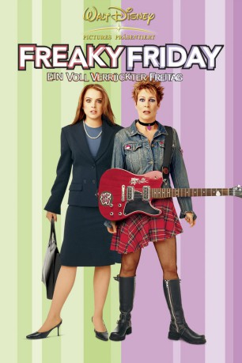

gesehen am 04.06.2019
gesehen am 04.06.2019Alternativ: Freaky Friday (Englischer Titel) gesehen am 04.06.2019
 
 IMDB-Wertung: 6.2 / 10
IMDB-Wertung: 6.2 / 10  Metascore:
Metascore: 
Dr. Tess Coleman und ihre 15-jährige Tochter Anna kommen nicht gerade gut miteinander aus. Besser gesagt: Sie liegen sich meist in den Haaren. Ärger gibt's um alles. Um die Frisur, die Klamotten, die Musik, die schulischen Leistungen und natürlich die Liebe. Eines verrückten Freitags sorgen zwei identische chinesische Glückskekse für ein absolutes Chaos: Tess und Anna stellen fest, dass sie sich jeweils im Körper der anderen befinden. Horror! Während Tess sich nun mit fiesen Lehrern, Klausuren und ihrer Musikkarriere rumschlagen muss, frischt Anna das Outfit ihrer Mutter auf, bringt ihre Psychoklienten an den Rand des Nervenzusammenbruchs und Mamis Kreditkarte ans Limit.
Jahr: 2003
Dauer: 97 Minuten
FSK: 0
Land: USA Studio: Buena Vista PicturesTonspuren: DD5.1 - ,
Untertitel:
Auflösung: 1080p (1920x1080) Größe: 4474 MB
Genre: Musik, Komödie, Fantasy, Familie, Liebe
Regisseur: Mark Waters
Drehbuch: Mary Rodgers, Heather Hach, Leslie Dixon
Soundtrack: Rolfe Kent
Darsteller:
 Jamie Lee Curtis als Tess Coleman
Jamie Lee Curtis als Tess Coleman Lindsay Lohan als Anna Coleman
Lindsay Lohan als Anna Coleman Mark Harmon als Ryan
Mark Harmon als Ryan Harold Gould als Grandpa
Harold Gould als Grandpa Chad Michael Murray als Jake
Chad Michael Murray als Jake Stephen Tobolowsky als Mr. Bates
Stephen Tobolowsky als Mr. Bates Rosalind Chao als Pei-Pei
Rosalind Chao als Pei-Pei Willie Garson als Evan
Willie Garson als Evan Lorna Scott als Butcher Woman
Lorna Scott als Butcher Woman Hayden Tank als
Hayden Tank als  Marc McClure als
Marc McClure als  Mary Ellen Trainor als
Mary Ellen Trainor als  Erica Gimpel als
Erica Gimpel als  Daniel Raymont als
Daniel Raymont als Datei: X:\2003(A-F)\Freaky Friday - Ein voll verrückter Freitag (2003, FSK0, 1920x1080).mkv seit 29.05.2019
Festplatte: HD 2003-2004-2005(A-F)
 Es gibt insgesamt 26 Filme in der Gruppe '2003(A-F)'
Es gibt insgesamt 26 Filme in der Gruppe '2003(A-F)'